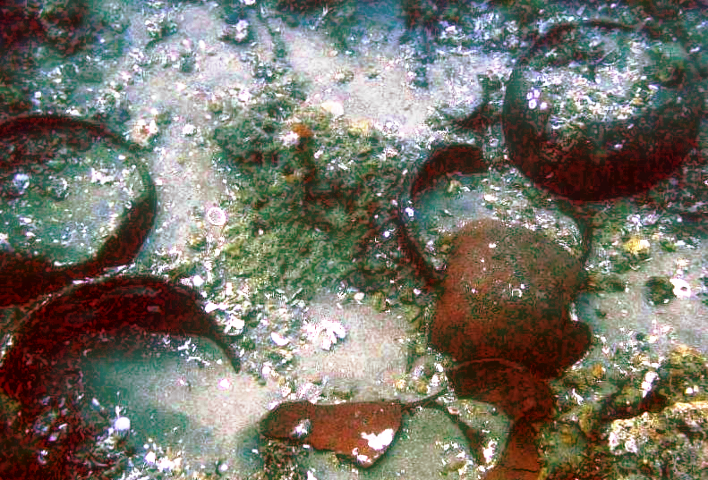
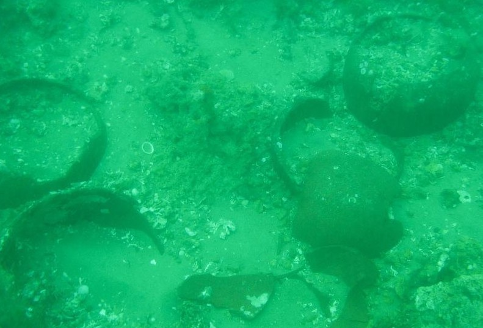
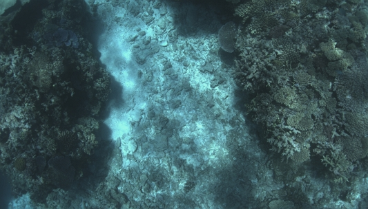

Example Gallery
Sample underwater image assessments and quality reports
Assessment Examples
Below are examples of underwater images assessed with Underwater_IQA. Click on any image to view a larger version. Each example includes quality metrics and assessment details.
These images demonstrate the system's ability to identify the blue water problem, assess feature usefulness for computer vision, and evaluate marine science research value.
High Quality Examples
Images with good clarity, color saturation, and detail preservation

Overall: 82/100 | Feature Usefulness: 85/100 | Blue Water: 3/10
Assessment Details
| Metric | Score | Interpretation |
|---|---|---|
| Overall Quality | 82/100 | Excellent - High quality underwater image |
| Blue Water Severity | 3/10 | Minimal - Minimal blue-green color cast |
| Feature Usefulness | 85/100 | Excellent - Suitable for computer vision tasks |
| Marine Science Value | 80/100 | Excellent - Good for research and species ID |
| Sharpness | 8.5/10 | Very sharp - Good edge definition |
| Contrast | 8.2/10 | Good contrast - Objects clearly distinguishable |
| Color Saturation | 7.8/10 | Good saturation - Colors well preserved |
Strengths
- Clear visibility of underwater features
- Minimal blue-green color cast
- Good contrast between objects and background
- Detailed edges and fine structures visible
- Suitable for feature extraction and object detection
Recommendations
This image is of high quality and requires minimal enhancement. It is suitable for:
- Direct use in computer vision pipelines
- Marine science research and analysis
- Training data for deep learning models
- Documentation and archival purposes
Poor Quality Examples
Images affected by blue water problem, low contrast, and reduced visibility

Overall: 38/100 | Feature Usefulness: 35/100 | Blue Water: 8.5/10
Assessment Details
| Metric | Score | Interpretation |
|---|---|---|
| Overall Quality | 38/100 | Poor - Significant quality issues |
| Blue Water Severity | 8.5/10 | Severe - Strong blue-green color cast present |
| Feature Usefulness | 35/100 | Poor - Limited usefulness for computer vision |
| Marine Science Value | 42/100 | Fair - Limited research value due to low clarity |
| Sharpness | 4.2/10 | Blurry - Significant blur and loss of detail |
| Contrast | 3.8/10 | Very low - Poor object-background separation |
| Color Saturation | 2.5/10 | Desaturated - Strong blue color cast dominates |
Identified Issues
- Severe blue-green color cast
- Very low contrast - objects barely visible
- Significant blur and loss of detail
- Color loss - reds and yellows appear very dark
- Poor suitability for automated analysis
Recommendations for Enhancement
This image would benefit from enhancement before use:
- Color correction - boost red and warm color channels
- Contrast enhancement - apply histogram equalization or adaptive contrast
- Denoising - apply noise reduction filter
- Deblurring - consider deconvolution techniques
- Blue color reduction - selectively reduce blue channel
Note: Enhanced images can significantly improve this image's utility for marine research and computer vision applications.
Real-World Coral Reef Examples
Images from actual underwater surveys (REEFSCAN Great Barrier Reef data)

Overall: 71/100 | Blue Water: 4/10 | Depth: ~20m
Overall: 65/100 | Blue Water: 6/10 | Depth: ~25m
Real-World Assessment Context
These images are from actual underwater coral reef monitoring surveys. The REEFSCAN project uses automated underwater vehicles to document reef health and biodiversity.
Quality Assessment Value
- Automated quality filtering of survey data
- Standardized quality metrics across surveys
- Identification of best images for species ID
- Documentation of survey conditions
- Quality-aware dataset curation for machine learning
Research Applications
Quality assessments enable:
- Coral health monitoring with consistent metrics
- Automated species identification from high-quality images
- Temporal comparison of reef conditions
- Training high-quality datasets for AI models
- Detection of declining coral cover and bleaching
Quality Comparison
Visual comparison showing the difference in quality scores
Good Quality
Poor Quality
Key Differences
| Aspect | Good Quality | Poor Quality |
|---|---|---|
| Clarity | Clear details visible | Blurry and low detail |
| Color Cast | Minimal blue tint | Strong blue cast |
| Contrast | Good separation | Low contrast |
| Usability | Ready for analysis | Requires enhancement |
Understanding the Scores
Overall Quality
Range: 0-100
General assessment of image quality considering all factors.
- 80+: Excellent
- 60-79: Good
- 40-59: Fair
- <40: Poor
Blue Water Severity
Range: 0-10
Indicates presence and severity of blue-green color cast.
- 0-3: Minimal
- 4-6: Moderate
- 7-10: Severe
Feature Usefulness
Range: 0-100
Suitability for computer vision and automated analysis.
- 80+: Excellent for CV
- 60-79: Good for CV
- <60: Limited CV use
Marine Science Value
Range: 0-100
Research value for species ID and marine studies.
- 80+: Excellent for research
- 60-79: Good for research
- <60: Limited research use
Try Your Own Images
Want to assess your own underwater images? Use our interactive web interface with no installation required.
Try Live Demo